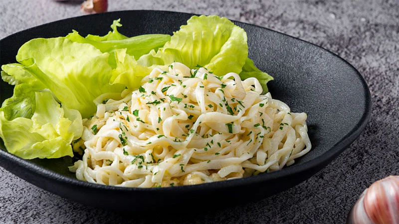

Linguine ao molho de alho

Ingredientes
- 300 g de macarrão linguine
- 1/3 de xícara (chá) de creme de leite
- 6 dentes de alho médios
- 1 colher (sopa) de azeite
- 1 colher (sopa) de farinha de trigo
- Água para cozinhar o macarrão
- 200 ml de leite
- 1 cubo de caldo de galinha
- 1 colher (chá) de margarina de boa qualidade
- 1 colher (café) rasa de noz moscada
- Ervas finas a gosto
Modo de preparo
- Cozinhe o macarrão em água fervente, aproximadamente por 10 minutos, depois escorra o macarrão e reserve.
- Pique o alho em pedaços pequenos, não use alho pronto pois altera totalmente o sabor.
- Coloque o azeite na panela e aqueça, coloque o alho e frite-o até dourar em fogo médio.
- Quando o alho estiver frito, abaixe o fogo, depois adicione a margarina e deixe-a derreter.
- Acrescente a farinha de trigo, junte metade do leite, mexa até derreter o trigo e acrescente o restante. Mexa durante todo o processo, depois adicione o caldo de galinha na panela e deixe-o derreter mexendo sempre para o molho não empelotar.
- Quando o caldo de galinha derreter pode aumentar um pouco o fogo para o molho engrossar, depois mexa por mais 3 minutos para não ficar com sabor de trigo no molho.
- Acrescente o creme de leite, a noz moscada e as ervas, mexendo sempre.
- Lave o macarrão antes de adicionar o molho para ele não grudar, coloque o macarrão no prato e jogue o molho por cima ainda quente.
-> Voltar a lista de receitas <-
-> Página Principal <-